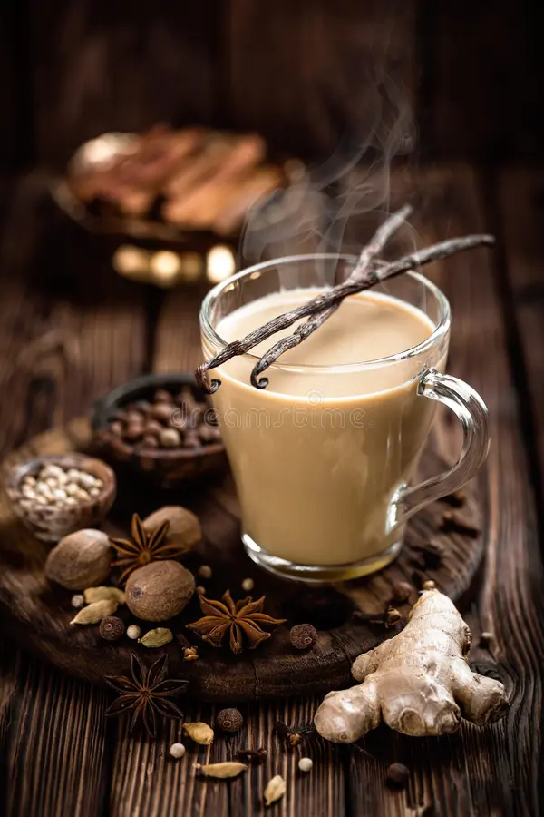

Home
Chai

Authentic Indian Masala Chai
This traditional recipe creates a fragrant, spiced milk tea that
is both warming and invigorating. The robust flavor of black tea is
simmered with a blend of aromatic spices, like crushed cardamom, cinnamon,
cloves, and fresh ginger. Slowly boiling the milk with the tea leaves and
spices allows the rich, complex flavors to fully infuse. The result is a
bold, creamy, and satisfying beverage that is a cornerstone of Indian
culture, often served with a touch of sugar to balance the spices.
This classic Masala Chai recipe invites you to slow down and savor the process,
transforming a simple cup of tea into a soul-soothing ritual. The key lies in
the perfect marriage of rich black tea and a custom blend of spices, which can
be adjusted to your preference for a milder or stronger flavor. Boiling the
water with the crushed spices first releases their aroma. The final simmer with
milk and sugar creates a wonderfully creamy texture and a deeper, cooked
flavor that is utterly distinct from the sugary, concentrated versions served
at coffee shops. With each sip, you experience the balanced interplay of sweet,
milky richness and the pleasant kick of the spices, making it the perfect
beverage for a moment of quiet contemplation or a gathering with friends.
Ingredients :
- Water (1 cup)
- Milk (1 cup)
- Black tea (1 tablespoon or 1-2 tea bags)
- Sugar (to taste, start with 1-1.5 teaspoons)
- Ginger (1 small piece, crushed or grated)
- Cardamom pods (2-3, lightly crushed)
- Cinnamon stick (1/2 to 1 inch)
- Optional: Cloves, black peppercorns, or other spices to taste
Step-by-step instructions
- Boil the water and spices: In a saucepan, bring 1 cup of water to a boil. Add the crushed ginger, lightly crushed cardamom,
and cinnamon stick. Let it simmer for a few minutes to infuse the flavors.
- Add tea and sugar: Add 1 tablespoon of tea leaves or bags and 1-1.5 teaspoons of sugar. Stir and bring the mixture back to a boil.
- Introduce milk: Pour in 1 cup of milk and increase the heat to bring the chai to a boil again. Be careful, as it can foam up and overflow. Watch closely, and lower the heat to a simmer once it starts boiling.
- Simmer to combine: Let the chai simmer for at least 2-3 minutes, or longer for a more concentrated flavor. This helps combine all the flavors and gives the tea its rich color.
- Strain and serve: Turn off the heat and carefully strain the chai through a fine-mesh sieve into your cups, discarding the tea leaves and spices.
- Sweeten and enjoy: Add more sugar if needed, stir, and serve hot.